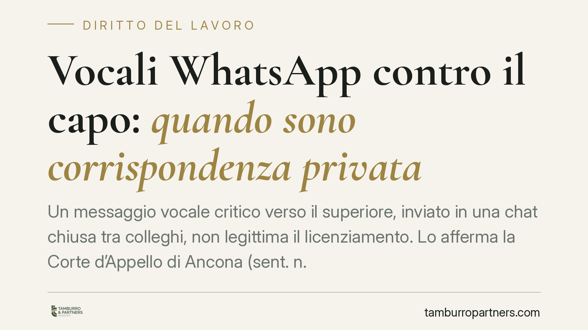

Vocali WhatsApp contro il capo: quando sono corrispondenza privata
Un messaggio vocale critico verso il superiore, inviato in una chat chiusa tra colleghi, non legittima il licenziamento. Lo afferma la Corte d'Appello di Ancona (sent. n. 101/2026): quei messaggi sono corrispondenza privata tutelata dalla Costituzione e restano inutilizzabili dal datore anche se un partecipante li inoltra. Una pronuncia che ridisegna i confini tra libertà di sfogo e dovere di fedeltà.

Il caso
Una lavoratrice aveva inviato, in una chat WhatsApp composta da soli colleghi, alcuni messaggi vocali di contenuto critico nei confronti del capo reparto. Quei vocali erano poi finiti nelle mani del datore di lavoro, verosimilmente inoltrati da un partecipante alla conversazione. Il datore li aveva utilizzati come fondamento di una contestazione disciplinare.
La Corte d'Appello di Ancona ha escluso la legittimità di quel procedimento. Il motivo è netto: quei messaggi costituiscono corrispondenza privata e, in quanto tali, non sono utilizzabili per fini disciplinari.
Inquadramento normativo
Il punto di riferimento è l'art. 15 della Costituzione, che tutela la libertà e la segretezza della corrispondenza e di ogni altra forma di comunicazione. La norma protegge non solo la lettera tradizionale, ma qualunque scambio comunicativo indirizzato a destinatari determinati: email, SMS e, oggi, i messaggi su piattaforme come WhatsApp.
La chiave sta nel carattere chiuso della conversazione. Una chat tra soli colleghi, non aperta al pubblico, è equiparabile a una corrispondenza riservata tra persone individuate. Chi partecipa ha un'aspettativa legittima di segretezza: sta parlando a un gruppo ristretto, non diffondendo un messaggio al mondo.
Su questa aspettativa si fonda la pronuncia. Secondo la Corte, il fatto che uno dei co-destinatari abbia inoltrato i vocali al datore non trasforma la comunicazione privata in materiale lecitamente acquisito. La tutela dell'art. 15 Cost. resta ferma: il datore non poteva fondare la contestazione su contenuti nati e circolati in un ambito protetto.
Perché è diverso dalla diffamazione
Il discrimine è tra sfogo privato e diffusione pubblica. Criticare il superiore in una cerchia chiusa di colleghi rientra nel normale confronto interno a un gruppo di lavoro. Diverso è il caso di dichiarazioni rese in contesti aperti, su bacheche social pubbliche o rivolte a terzi estranei: in quelle ipotesi può configurarsi una lesione dell'onore o una violazione del dovere di fedeltà ex art. 2105 c.c., con possibili conseguenze disciplinari.
La pronuncia di Ancona non autorizza qualunque espressione: individua un perimetro. Dentro la chat chiusa opera la tutela della riservatezza; fuori, i confini cambiano.
Implicazioni pratiche
Per i lavoratori. Una critica mossa in una chat riservata tra colleghi non è, di per sé, condotta sanzionabile. Attenzione però: la protezione dipende dal carattere effettivamente chiuso della conversazione e dal contenuto. Espressioni che trascendano in minacce, molestie o accuse gravemente offensive possono assumere rilievo autonomo, anche penale, a prescindere dalla sede.
Per i datori di lavoro. Fondare una contestazione disciplinare su messaggi provenienti da una chat privata espone a un rischio concreto di illegittimità. Il materiale potrebbe essere dichiarato inutilizzabile, con conseguente annullamento della sanzione o del licenziamento e possibili profili risarcitori. L'acquisizione di comunicazioni riservate tramite un partecipante non sana il vizio di fondo.
Sul piano probatorio. La provenienza "da un collega" non rende la prova neutra. La modalità con cui il contenuto è stato ottenuto incide sulla sua utilizzabilità nel procedimento disciplinare e in giudizio.
Cosa fare in concreto
- Verifica la natura della chat prima di fondare una contestazione: se la conversazione è chiusa e riservata, valuta con un legale l'utilizzabilità dei contenuti.
- Distingui il contenuto: una critica generica non equivale a una condotta illecita; concentra l'analisi su eventuali espressioni diffamatorie, minacciose o lesive che possano avere rilievo autonomo.
- Non costruire sanzioni su materiale di dubbia provenienza: raccogli elementi acquisiti in modo lecito e documentabile.
- Aggiorna policy e regolamenti aziendali sull'uso degli strumenti di comunicazione, chiarendo i confini tra comunicazione privata e canali aziendali.
- Chiedi una valutazione preventiva prima di avviare un procedimento disciplinare che si regge su chat o messaggi: l'inutilizzabilità della prova può compromettere l'intera contestazione.
Un principio in evoluzione
La decisione di Ancona si inserisce in un orientamento che estende alle comunicazioni digitali le garanzie classiche della corrispondenza. Resta una pronuncia di merito, non un principio consolidato in sede di legittimità: consigliamo di seguirne gli sviluppi e di non trattarla come regola assoluta. Il bilanciamento tra riservatezza del lavoratore e tutela dell'organizzazione aziendale continua a definirsi caso per caso.
---
*Contributo informativo a cura di Tamburro & Partners - Avv. Giuseppe Tamburro. Non costituisce parere legale.*
Ogni storia di lavoro ha i suoi tempi.
Se gestisci HR e vuoi un confronto su contenzioso, ispezioni o licenziamenti, scrivi allo studio. Ti rispondiamo entro un giorno lavorativo.